Table of Contents
1. General Cleaning
Removing Windows garbage and improving everything.
NOTE:
If you see any prompt, always select YES or CONTINUE.
If it says RESTART, just select LATER or NOT NOW.
-
Download the following:
-
Open OOSU10++, do the following:

-
Select the file willow's configuration.

-
Scroll down and unselect this if like you use the taskbar search bar:
- Restart the computer.
-
Next, Extract the SophiApp zip file.
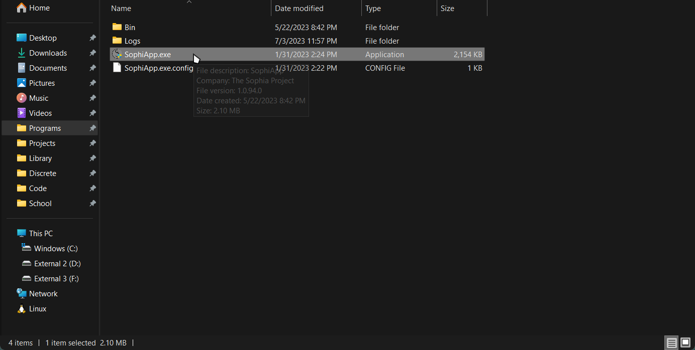 -
Check/Uncheck and/or Select/Unselect the following:
-
Privacy
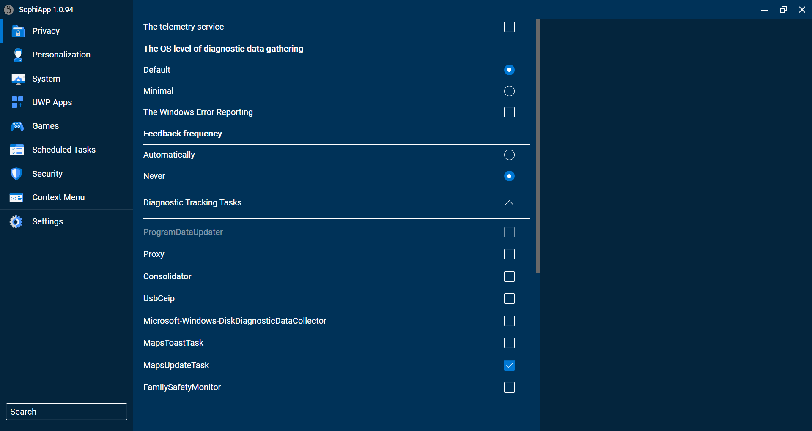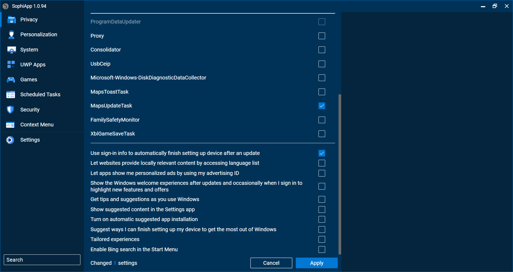 -
Personalization
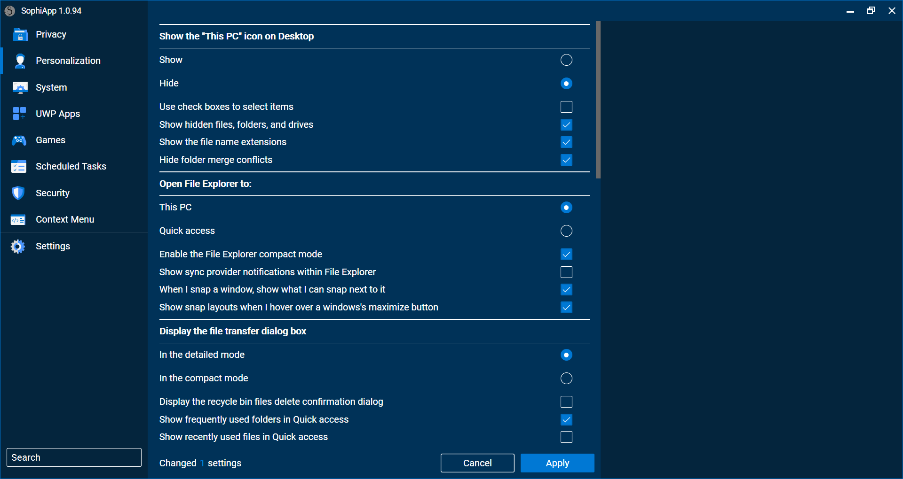 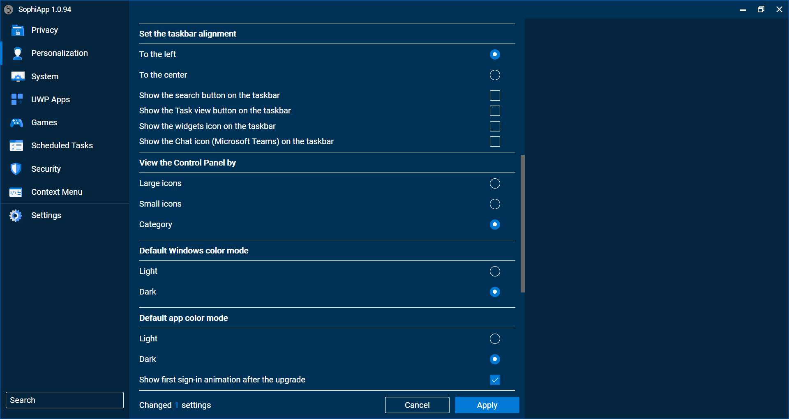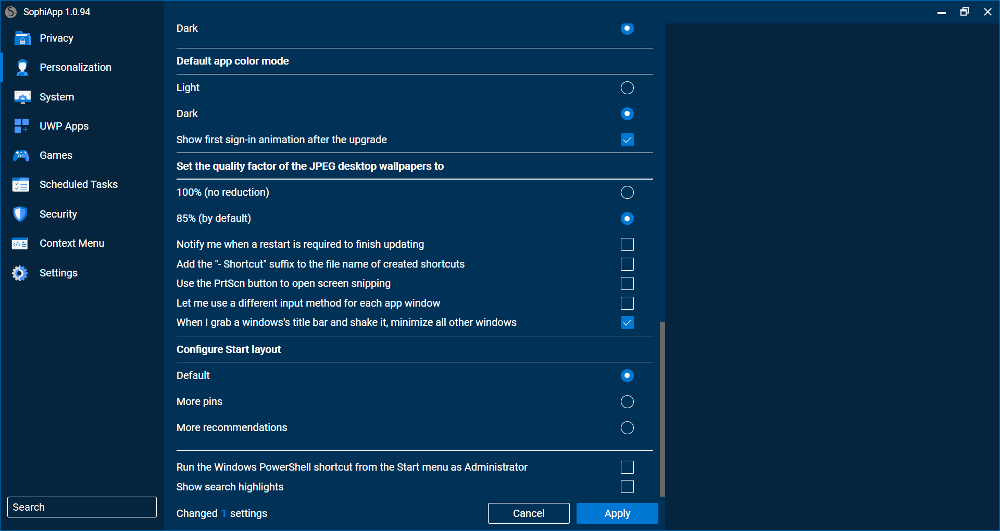 -
System
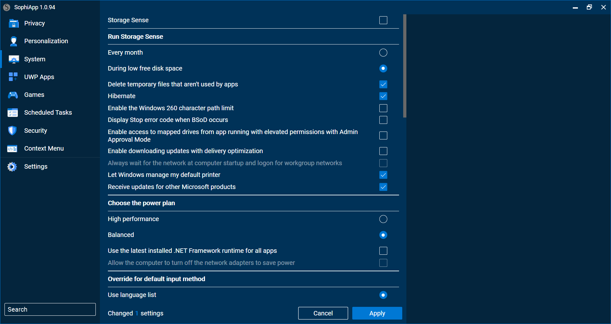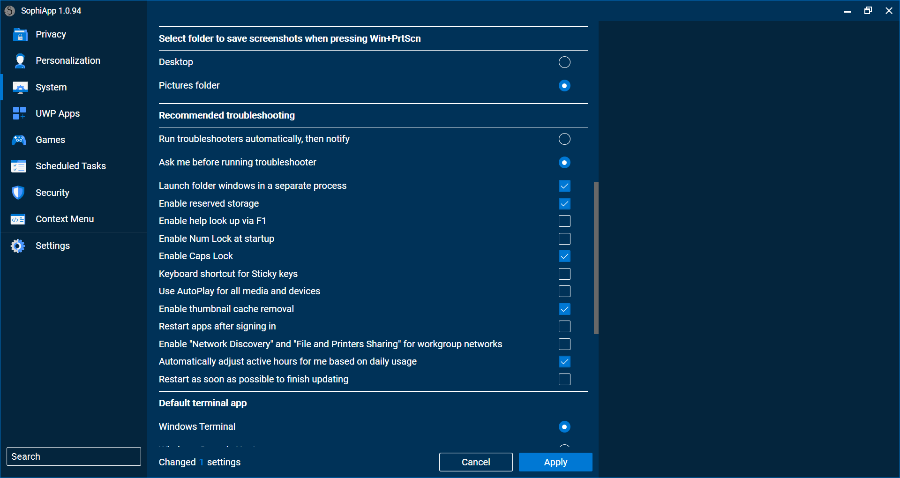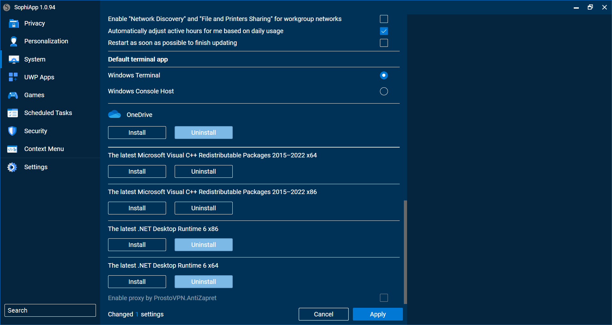 -
UWP Apps
Click any icon to uninstall. Basically, you should click all the icons except the ones in this image.
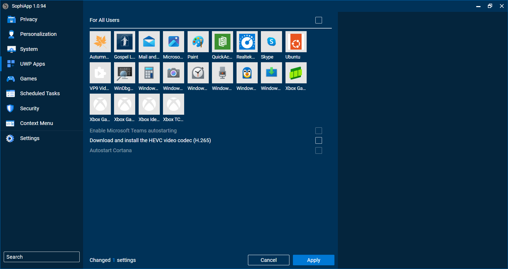 -
Games
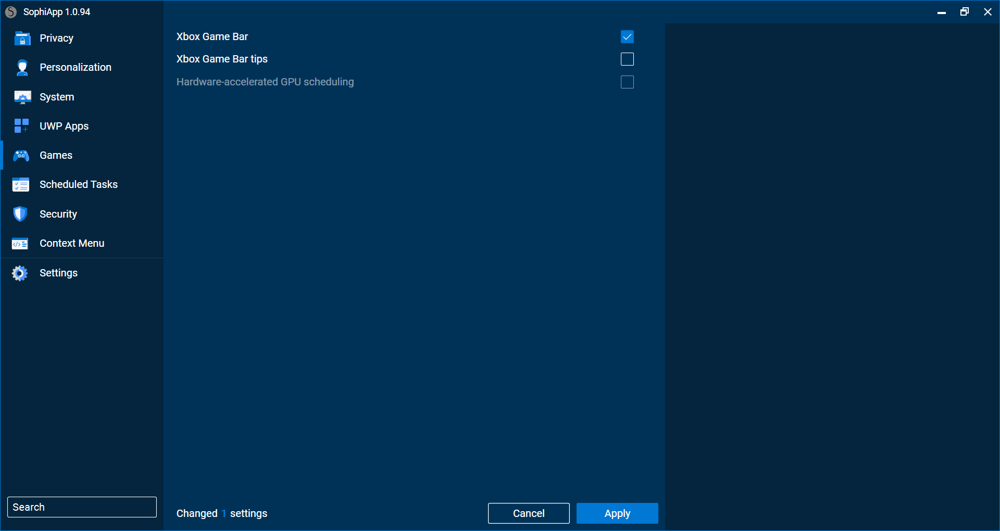 -
Scheduled Tasks
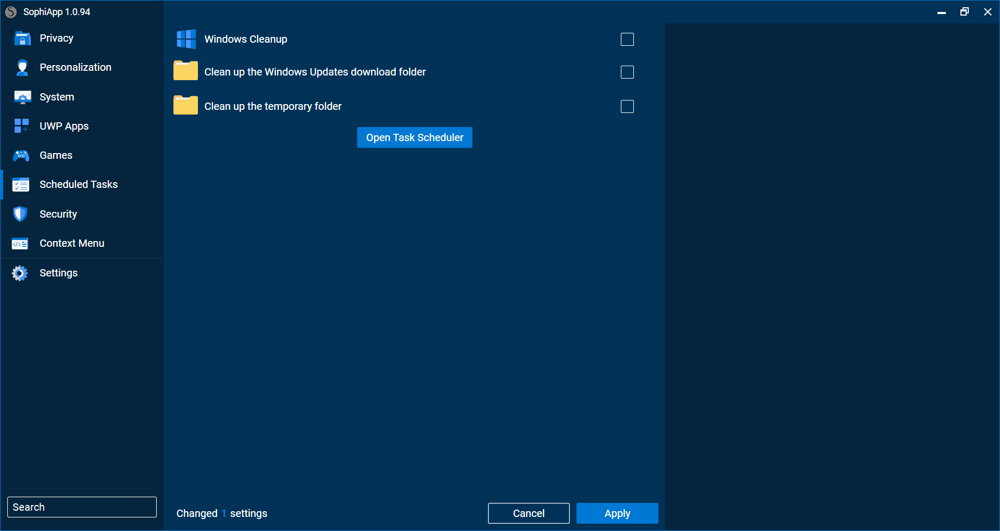 -
Security
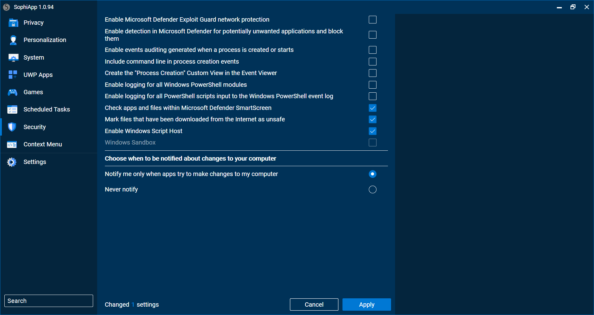 -
Context Menu
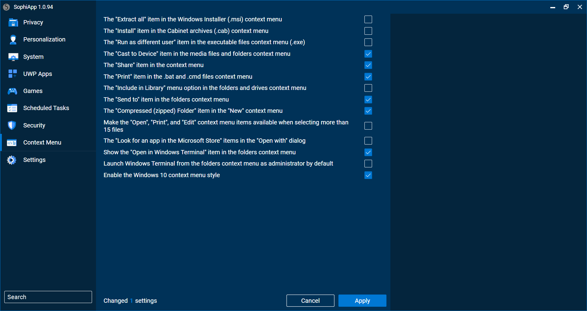
-
-
Click Apply at the bottom, and restart computer again.